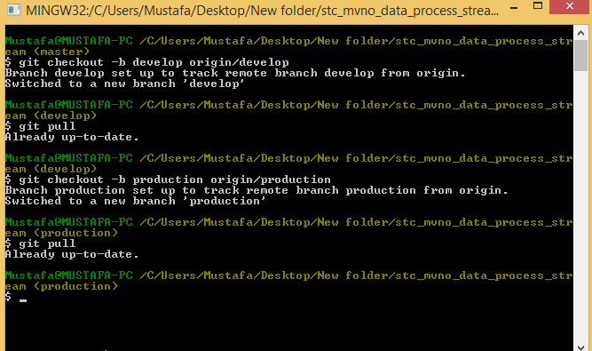
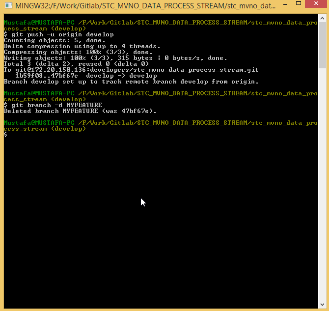
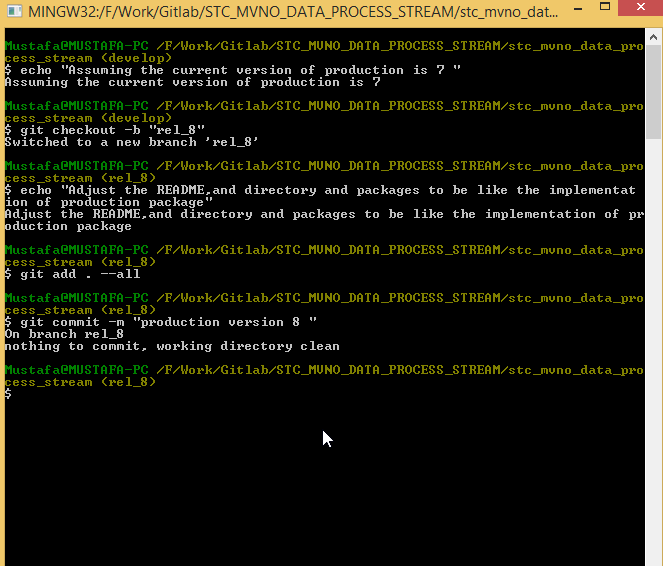
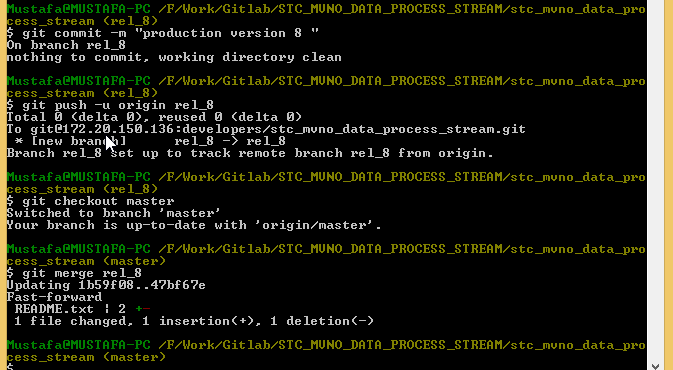
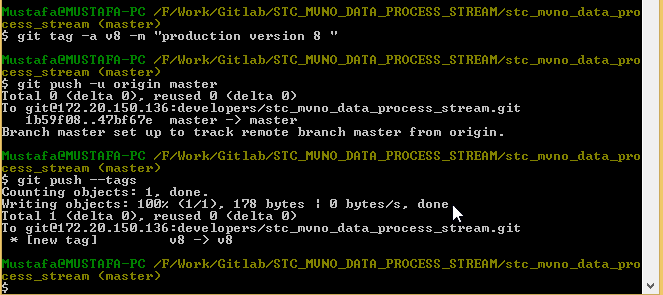

Git Flow Process
STC Environment
Created by Mustafa M.Hasan / FB@Mustafa
General Inforamtion
Gitlab server ip
http://172.20.150.136/
Workflow
Repositories
Admin mails
Abdullah I. Alghonim : aghonim@stc.com.sa
Abdulrahman E. Albaraiki : abriki@stc.com.sa
Ahmed Habiba : ahabiba.c@stc.com.sa
Firas Nemer : firas.nemer@comptel.com
Mustafa M.Hasan : muhasan.c@stc.com.sa
Project Repository
Cloning a Repository and/or update Existing one

Clone A repository

STC Repos Modification
due to installation default configuration of gitlabOriginal
git@SC-172-20-150-136.RegionOne.stc.corp:developers/stc_mvno_data_process_stream.git
Modified
git@172.20.150.136:developers/stc_mvno_data_process_stream.git
Original
http://SC-172-20-150-136.RegionOne.stc.corp/developers/stc_mvno_data_process_stream.git
Modified
http://172.20.150.136/developers/stc_mvno_data_process_stream.git
git clone git@172.20.150.136:developers/stc_mvno_data_process_stream.git
Setup a tracking branches
git checkout -b production origin/production
git checkout -b develop origin/develop Example
Getting The latest Package
Get the name of the latest package from Node Configuration details in Production Gui
Check if the package exists in your cloned repository production branch
if both not matched ===> Report
Add a feature
- Create a new branch for the feature
- Push the branch to gitlab if only you work with other developers
- Merge the feature to develop branch after finishing
- Delete the feature branch
git checkout develop
git checkout -b MYFEATURE
Push the branch to gitlab
git push -u origin MYFEATURE Finalize and Merge
git add . --all
git commit -m "message"
git checkout develop
git merge MYFEATURE
Example

Push and Delete the Feature Branch
git push -u origin develop
git branch -d MYFEATURE
Example
Update gitlab Through Release
- Create a new release branch from develop
- Adjust packages names , follow naming convention ,update readme file and add the documentation
- Other Developers should push the rest of features to develop branch if(Multi-update in same release)
- Push the release branch to gitlab for reviewing and finalizing by other developers (if multiple changes production update)
- Merge the release branch to master branch
- Add a tag to the master branch
- Push the master branch and the tags
- Back-Merge the develop branch
Create a new release branch from develop
git checkout develop
git checkout -b rel_no Example

Push the release branch to gitlab
git push -u origin rel_no
Merge the release branch to master
git checkout master
git merge rel_no
Example

Add a tag to master branch for the release
git tag -a v8 -m 'Production version 8'
Push the master branch to gitlab alongwith the tags
git push -u origin master
git push --tags
Example

Back Merge the develop branch
git checkout develop
git merge rel_no
git push -u origin develop
Example
The End
Thank ...
... You ...
... For Your Time.